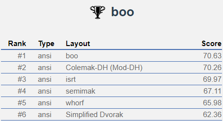

Boo layout is a layout designed for comfort with balanced hand usage and high homerow usage.
The layout consists of a very low amount of SFBs (single finger bigrams) which helps comfort by reducing the repetitive use of single fingers. Boo layout also has very low finger movement compared to QWERTY, and other alternative layouts with a focus on comfort.
Additionally, it also has a healthy amount of rolls.
With boo layout, the workload of each hand is extremely similar to the other to avoid unevenly wearing your hands down after long hours of typing. This also helps with potential speed because of the even distribution of load.
More common keys are placed in locations where stronger fingers are, and the homerow is prioritised for common keys to reduce hand movement (most vowels on homerow). Boo layout was initially created to rival the ISRT layout, but it turned out to be one of (if not the) best layout available on a standard keyboard.
Here's a comparison of boo layout against other popular alternative layouts on the SteveP layout analyser.
Here are the results from a test run on Semi's Layout Analyser
- Rolls: ~50.53%
- Alternates: ~30.38%
- Onehands: ~2.20%
- Redirects: ~10.65%
- Finger Speed (weighted): 11.43
- Finger Speed (unweighted): 37.43
- Highest Speed (weighted): 3.31 (LI)
- Highest Speed (unweighted): 10.38 (LI)
- Index Usage: 12.0% 14%
- SFBs: 1.186%
- DSFBs: 7.774%
- SFBs (with dynamic): 0.27%
- Top SFBs:
- sc 0.138%
- ue 0.129%
- rk 0.123%
- rl 0.077%
- ph 0.070%
- gs 0.061%
- nf 0.060%
- e' 0.048%
- Top DSFBs:
- ue 0.650%
- cs 0.462%
- hn 0.452%
- mt 0.399%
- rl 0.324%
- td 0.313%
- pn 0.299%
- tm 0.255%
- eu 0.253%
- dt 0.239%
- sc 0.236%
- lr 0.229%
- ws 0.225%
- iy 0.218%
- o. 0.205%
- a, 0.194%